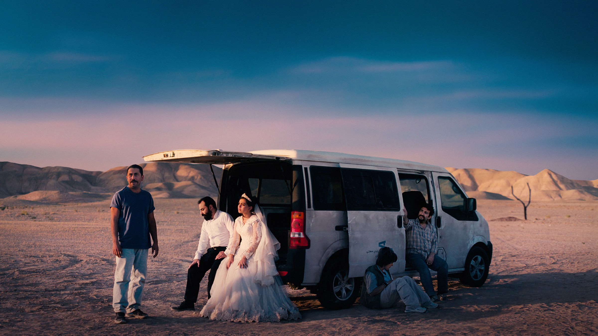
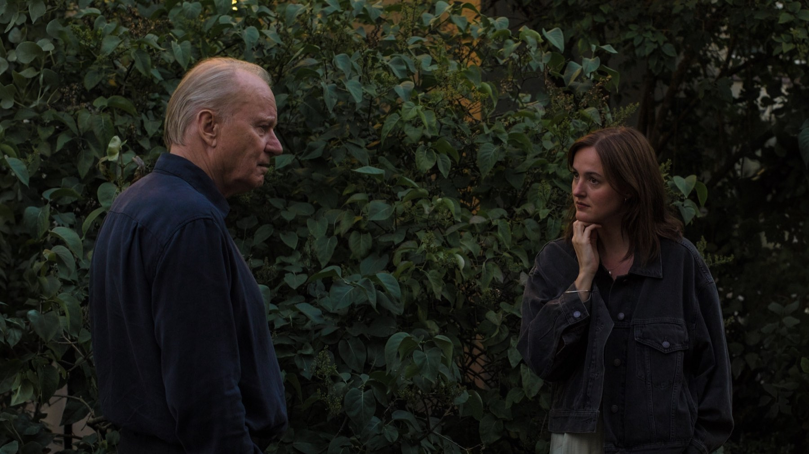

Cannes 2025: Palma d'oro a Jafar Panahi e tutti i premi
Il regista iraniano trionfa con un thriller girato senza permessi, Joachim Trier prende il Gran premio, il Brasile di The Secret Agent fa doppietta: il palmarès della 78ª edizione
La 78ª edizione del Festival di Cannes, dal 13 al 24 maggio 2025, si è chiusa con un vincitore che va ben oltre il cinema. La giuria guidata da Juliette Binoche ha assegnato la Palma d'oro a It Was Just an Accident di Jafar Panahi, regista iraniano che per anni ha lavorato tra divieti, processi e carcere. Un premio al film e insieme a una storia personale che ha commosso la Croisette.
La Palma d'oro a Jafar Panahi
It Was Just an Accident, in Italia Un semplice incidente, è un thriller sulla vendetta: un gruppo di ex prigionieri politici rapisce un uomo che crede di riconoscere come il proprio torturatore, e la certezza si trasforma presto in dubbio. Come quasi tutti i film recenti di Panahi, è stato girato senza l'autorizzazione delle autorità iraniane.
È la prima Palma d'oro per il regista, che era stato rilasciato dal carcere nel 2023 dopo uno sciopero della fame. Ritirando il premio, Panahi ha invitato i suoi connazionali a mettere da parte le divisioni. Negli Stati Uniti il film è distribuito da Neon: per la casa americana è la sesta Palma d’oro consecutiva.
Il Gran premio e il premio della giuria
Il secondo premio per importanza, il Grand Prix, è andato a Sentimental Value del norvegese Joachim Trier, dramma familiare su un padre regista e le sue figlie che avrebbe fatto molta strada nei mesi successivi. Il premio della giuria è stato diviso a metà tra lo spagnolo Sirāt di Oliver Laxe e il tedesco Sound of Falling di Mascha Schilinski, mentre il cinese Bi Gan ha ricevuto un premio speciale per Resurrection.

The Secret Agent fa doppietta
Il Brasile esce da Cannes con due premi pesanti grazie a The Secret Agent di Kleber Mendonça Filho, in Italia L'agente segreto: il regista ha vinto il premio per la regia e Wagner Moura quello come miglior attore. Tra le attrici è stata premiata Nadia Melliti per The Little Sister, mentre i fratelli Jean-Pierre e Luc Dardenne, già due volte Palma d'oro, hanno vinto per la sceneggiatura di Young Mothers. La Caméra d'or per la migliore opera prima è andata a The President's Cake di Hasan Hadi.
Una Palma d'oro che premia un film, e il coraggio di chi lo ha fatto.
Cosa è successo dopo
Il palmarès di Cannes 2025 si è rivelato una buona bussola per la stagione dei premi. Sentimental Value ha vinto a marzo 2026 l'Oscar per il miglior film internazionale per la Norvegia, mentre It Was Just an Accident e The Secret Agent sono entrati in centinaia di classifiche dei migliori film dell'anno. A ottobre 2026, in Italia Un semplice incidente e Sentimental Value sono disponibili in abbonamento su Sky e NOW, The Secret Agent su MUBI.
Una Palma d'oro politica e meritata, un Grand Prix che ha anticipato l'Oscar e un palmarès capace di guardare a tutto il mondo, dall'Iran al Brasile. Una delle edizioni più solide di Cannes degli ultimi anni.
Domande frequenti
Chi ha vinto la Palma d'oro a Cannes 2025?
Jafar Panahi con It Was Just an Accident, uscito in Italia come Un semplice incidente: è la sua prima Palma d'oro.
Chi era il presidente della giuria di Cannes 2025?
L'attrice francese Juliette Binoche.
Chi ha vinto i premi per gli attori a Cannes 2025?
Wagner Moura per The Secret Agent e Nadia Melliti per The Little Sister.